Суши — жапон асханасының ең танымал тағамдарының бірі. Оның негізінде негізінен балық, теңіз өнімдері, күріш және көкөністер болады.Суши дәстүрлі түрде жапон мәдениетінде үлкен рөл атқарады, оны дайындау және тұтыну рәсімі өте маңызды. Суши дайындау кезінде ингредиенттердің сапасы мен балансы, дәмі мен текстурасы өте мұқият қарастырылады. Суши көбінесе соя соусы, васаби және имбирьмен бірге беріледі.
Мәзір
Филадельфия
Филадельфия ролл суши түрі[1], әдетте ысталған лосось, кілегей ірімшігі және қияр[2]. Олар сондай-ақ балықтың басқа түрлері[3], авокадо[4], жасыл пияз[5] және күнжіт тұқымдары сияқты басқа ингредиенттерді қамтуы мүмкін.
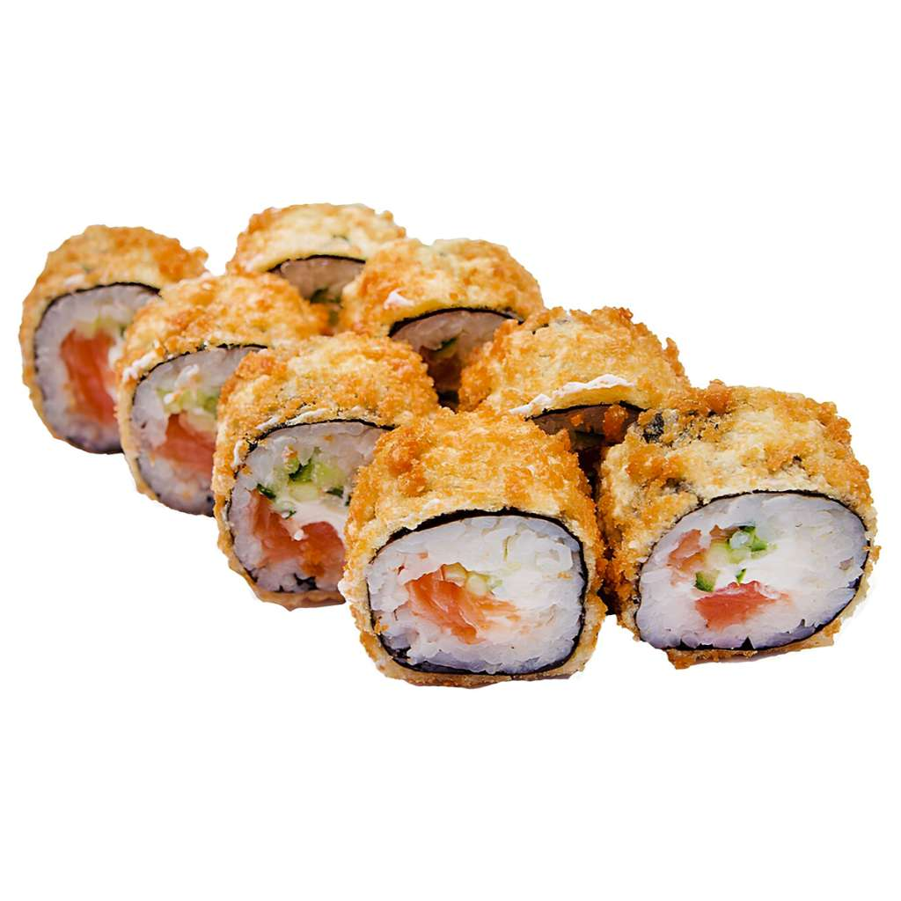
Темпура
Темпура орамдарында салма ұн мен жұмыртқадан тұратын қамырға қуырылады. Салмада балық, көкөніс немесе теңіз өнімдері болуы мүмкін және әдетте күріш пен нориге (теңіз балдыры) оралады. Темпура орамдары әдетте соя соусымен беріледі және орамдардың басқа түрлеріне қарағанда қытырлақ дәмге ие.
Бонито
Бұл Bonito Rolls құрамында бонито (кептірілген тунец) және күріш бар. Әдетте соя соусымен, васабимен бірге беріледі және бай және хош иісті дәмі бар. Бонито орамдарын әртүрлі балық пен теңіз өнімдерінің көмегімен дайындауға болады және Жапонияда және басқа елдерде кеңінен қол жетімді.
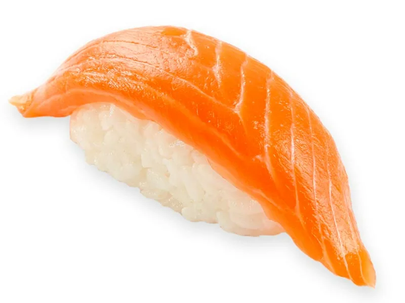
Нигири суши
Бұл – ең дәстүрлі түрлердің бірі. Қолмен қалыпталған күріш үстіне балық немесе теңіз өнімдері салынады. Көп жағдайда шикі балық (тунец, лосось), асшаян немесе омар пайдаланылады.
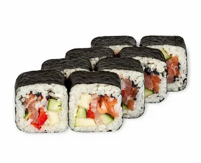
Футомаки
Қалың ролл, бірнеше ингредиент қолданылып, көлемі үлкейтілген.
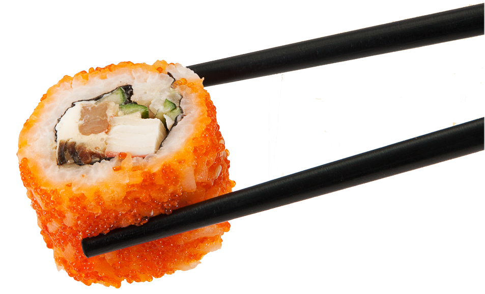
Сашими
Таза шикі балық немесе теңіз өнімдері тіліп, кесек түрінде беріледі. Мұнда күріш қолданылмайды. Бұл тағам балықтың дәмін ерекше көрсетеді.
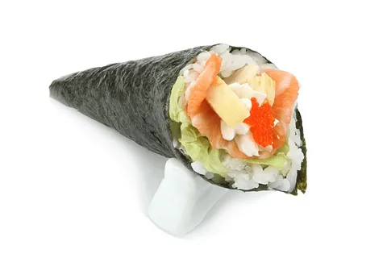
Темаки суши
Нориден жасалған конус пішінді орам, ішінде күріш, теңіз өнімдері мен көкөністер орналасады. Бұл суши түрі қолмен ұстап жей беруге ыңғайлы.
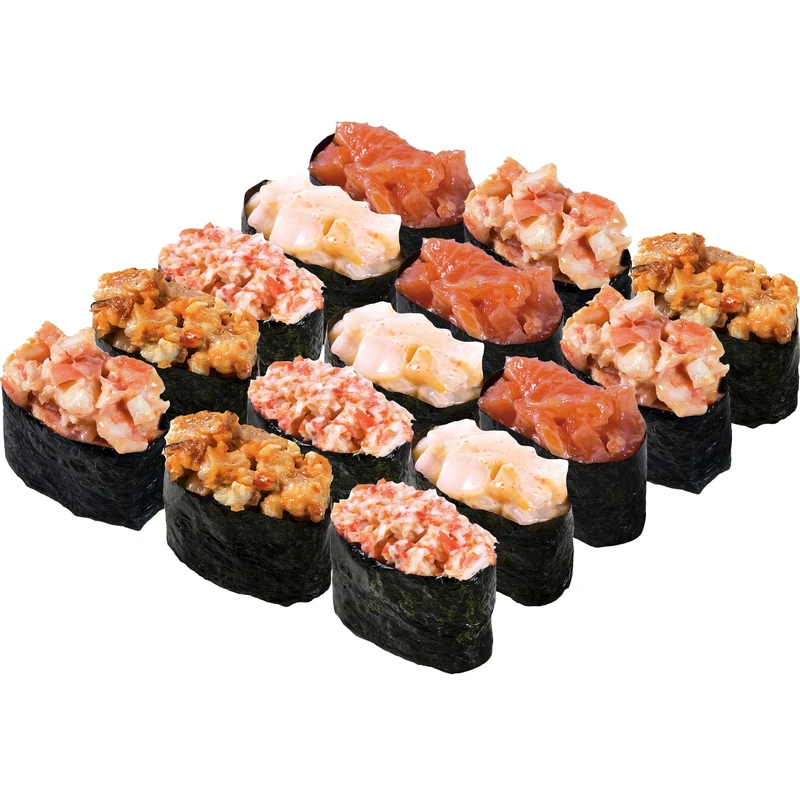
Гункани
"Кішкене қайық" деп те аталады. Күріштің айналасына нори оралып, үстіне жұмсақ ингредиенттер салынады, мысалы, ұсақталған теңіз өнімдері, икра, немесе теңіз жұлдызы.
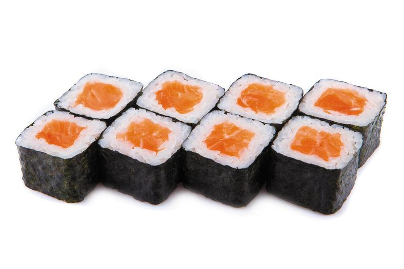
Маки суши
Нори балдырымен оралған күріш пен түрлі ингредиенттер (балық, көкөніс, жемістер) ролл пішініне келтіріледі. Оны бірнеше шағын кесекке бөледі.
Сет түрлері
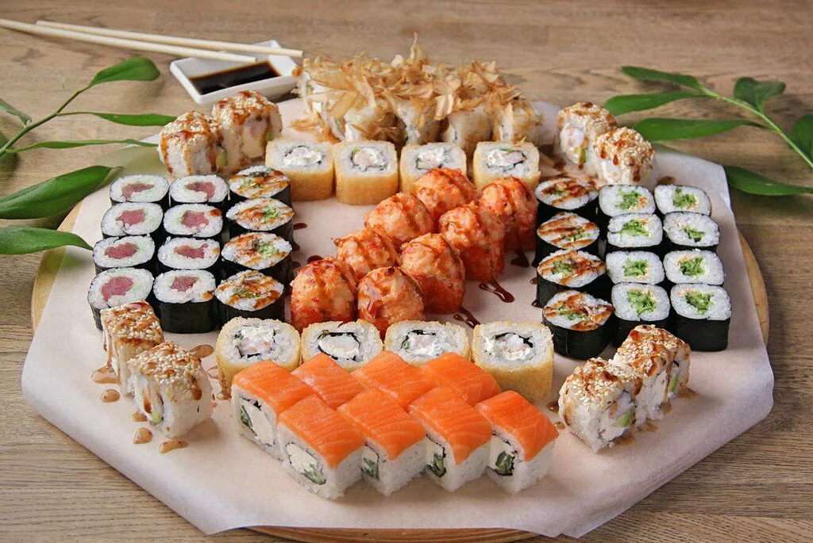
Классикалық Сет
Бұл сетте ең танымал суши түрлері ұсынылады. Әдетте нигири, маки (ролл) және кейде сашими кіреді.
Мысалы: Лосось нигири, тунец нигири, қияр маки, лосось маки.
Вегетариандық сет
Етсіз және балықсыз суши ұнататындарға арналған. Мұнда тек көкөністер мен басқа өсімдік текті ингредиенттер қолданылады.
Мысалы: Қияр маки, авокадо маки, көкөніс темпура роллы.
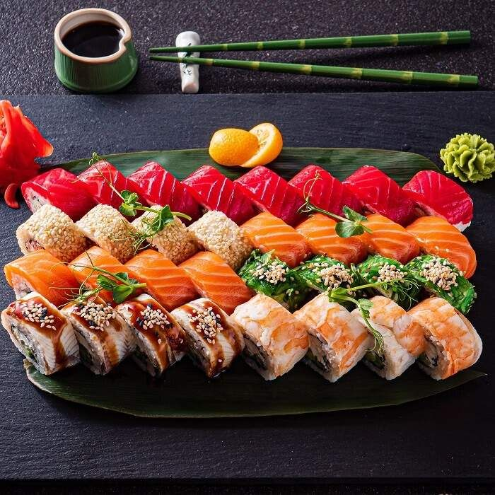
Люкс сет
Премиум ингредиенттерден жасалған қымбат әрі ерекше сет. Мұнда асыл балық түрлері, уылдырық және жоғары сапалы теңіз өнімдері ұсынылады.
Мысалы: Күнжітпен қапталған тунец, қызыл уылдырық қосылған нигири, жапон омарының сашимиі.
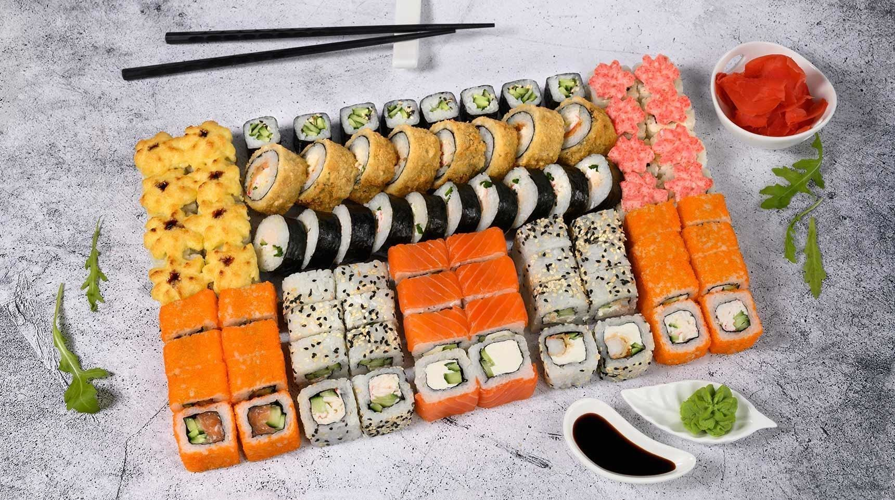
Микс сет
Бұл сетте сушидің әртүрлі түрлері болады. Мысалы, нигири, роллдар, сашими және гункани сияқты әртүрлі суши нұсқаларын қамтиды.
Мысалы: Лосось нигири, тунец роллы, сарықанат сашими, унаги гункани.
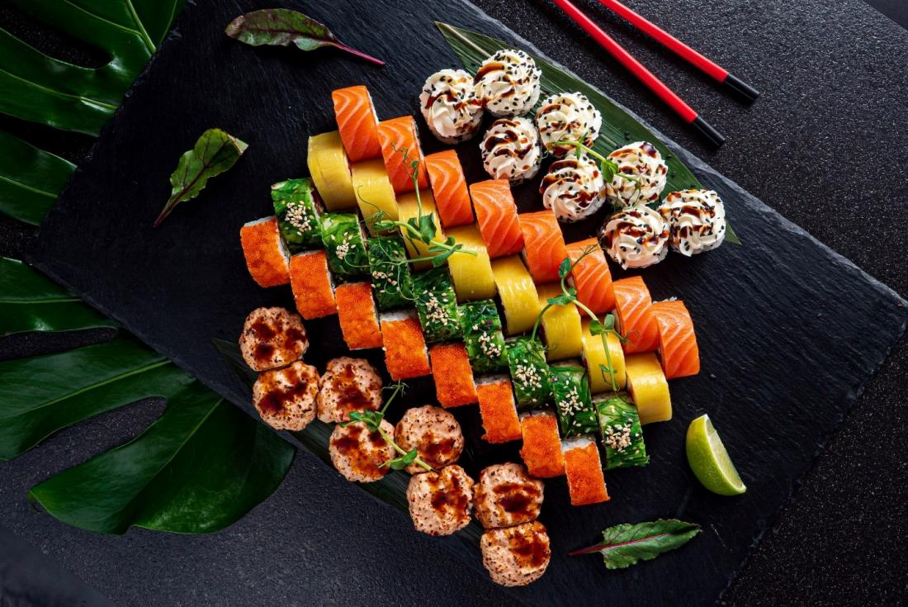
Сашими сеті
Суши күрішсіз берілетін сашими түрлерін ұнататындар үшін арналған. Әдетте құрамында шикі балық (тунец, лосось, сарықанат) және теңіз өнімдері болады.
Мысалы: Лосось сашими, тунец сашими, асшаян сашими.
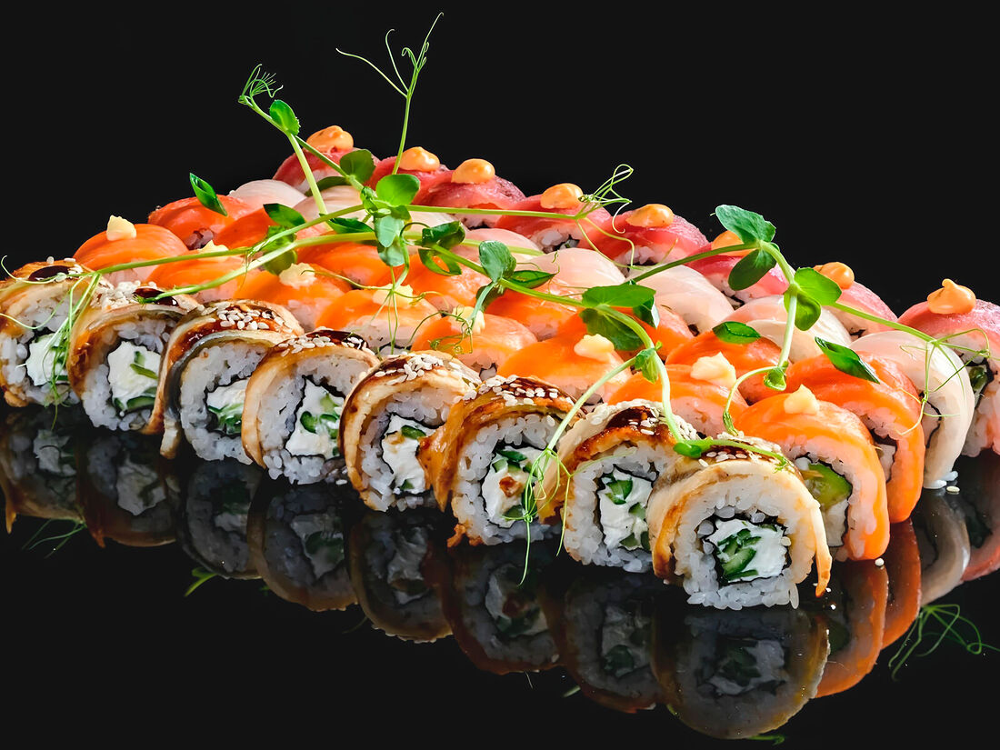
Филадельфия сеті
Филадельфия роллы лосось пен кремді ірімшік қосылған ролл ретінде танымал. Бұл сет осы роллдың бірнеше вариациясын қамтиды.
Мысалы: Классикалық филадельфия, унаги филадельфия, темпура филадельфия.

.webp)
.webp)